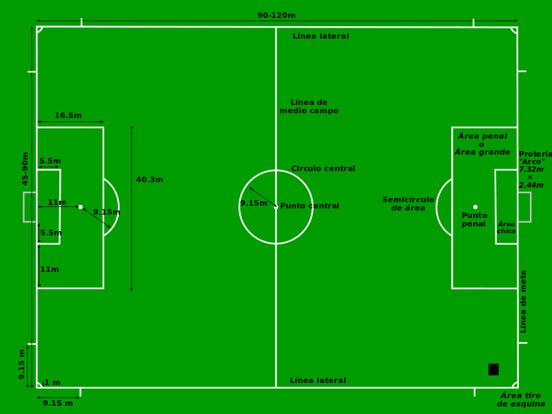
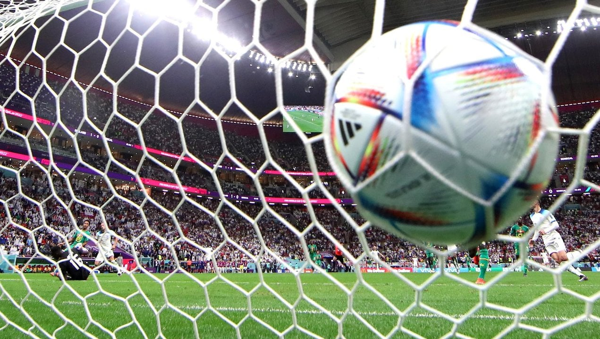
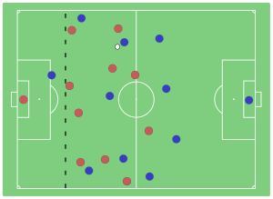
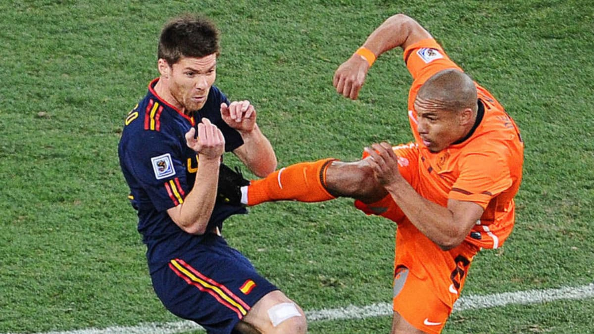
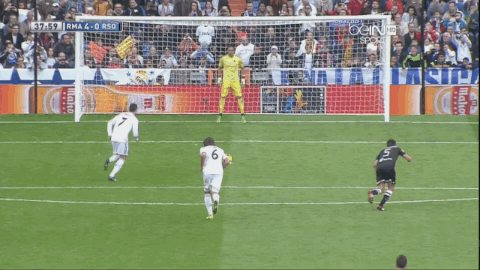
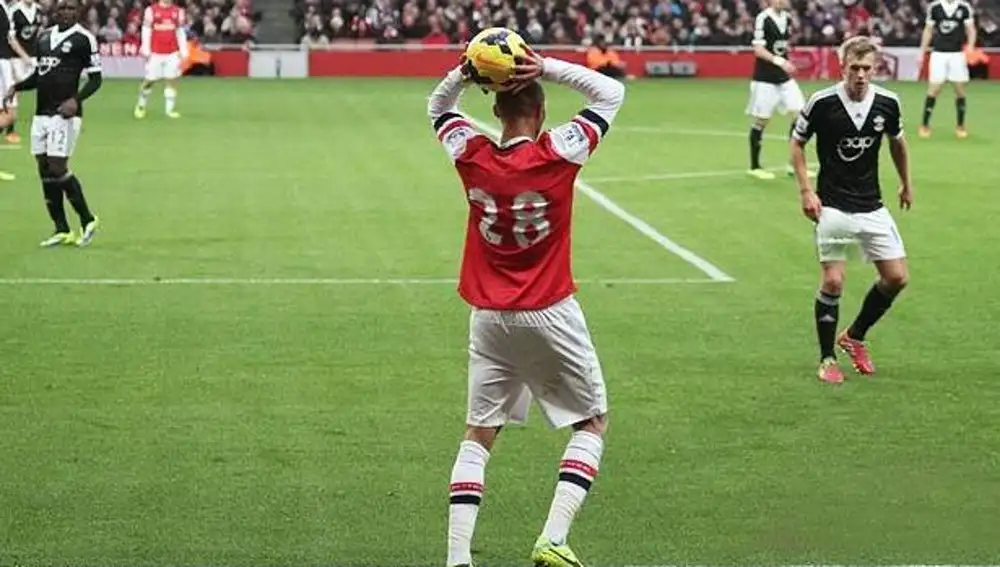
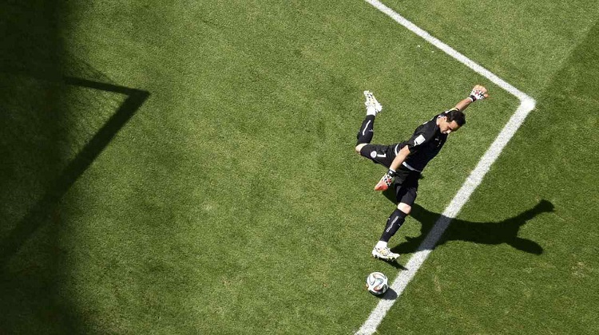
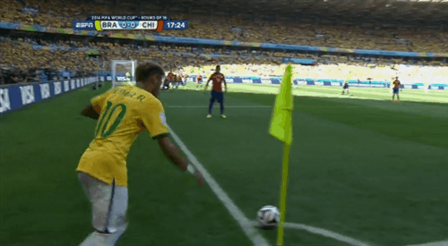

Reglas del juego
El fútbol tiene un conjunto de 17 leyes o reglas que se aplican en todo el mundo, aunque pueden haber algunas variaciones para adaptarse a las categorías femeninas, infantiles y veteranas. Aunque las reglas están bien definidas, hay diferencias en su aplicación debido a varios factores, incluyendo la región geográfica donde se juega. Por ejemplo, en Europa, especialmente en Inglaterra, los árbitros son más tolerantes con las faltas e infracciones, lo que resulta en menos amonestaciones y expulsiones, mientras que en otros lugares, como en Sudamérica, se usan tarjetas con más frecuencia para penalizar las faltas.
Las reglas del juego de fútbol son establecidas por la International Football Association Board (IFAB), que es un organismo compuesto por la FIFA y las cuatro asociaciones de fútbol del Reino Unido (Inglaterra, Escocia, Gales e Irlanda del Norte). Para que se apruebe una modificación a las reglas, se requiere el voto favorable de al menos la FIFA y de dos de las cuatro asociaciones del Reino Unido. La IFAB es responsable de mantener y actualizar las reglas del juego, asegurando su uniformidad y aplicabilidad en todo el mundo del fútbol.

Los porteros usarán guantes y uniforme distinto a los colores de los demás jugadores.
Se advierte que para series de eliminatoria, en caso de empate en los 90 minutos, se jugarán 30 más, en dos tiempos de 15 cada uno. Si no hay desempate, el ganador se definiirá en los penaltis.
Hay fuera de juego cuando este salga de los perímetros indicados.

El 'último hombre' será el defensor que esté más atrasado y será la referencia final para el juez de línea con el fin de señalar o no un fuera de juego.

hay otras sanciones, como las manos, que es el contacto con el brazo o mano de algún jugador de campo (no el portero dentro del área) con el balón.
Los arqueros son los únicos que no tomarán la pelota con las manos fuera de su área, o tomarla cuando llegue del pase de un compañero. Si es así, se señalará un tiro libre dentro del área, no un penalti.

El indirecto es aquel que debe ser jugado hacia otro jugador, cercano o lejano.

Este se sitúa a 11 metros de la portería, misma que estará protegida por el portero al momento del cobro.



Este se cobrará por la una de las puntas más cercanas a donde salió el balón.
